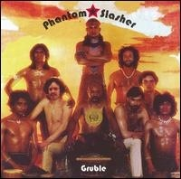

I lied. Here's the 10/27 show.

Wednesday, October 29, 2008
See what I did there? I violated everything I said. Oh wells, I guess I gotz mad ADDz.
show link.
this is most def a kick ass show! heck, I recommended the full 2.5 hrz! direct link(right click save-as to download)
New adds (get mojo to get them!):
Phantom Slasher - Gruble
Jakob Martin - Masking the Mirror
Geographer - Innocent Ghosts
Mercury Rev - Snowflake Midnight
Bird Show - Third Record

Phantom Slasher - Gruble

Jakob Martin - Masking the Mirror
Geographer - Innocent Ghosts
Mercury Rev - Snowflake Midnight
Bird Show - Third Record
First 15 Playlist track downloadables (right click song title to download):
Datarock - FaFaFa (Miami Horror RMX)
Thunderheist - Jerk It (Nasty Nav & JFK from MSTRKRFT RMX)
Friendly Fires - Paris (Aeroplane RMX)
-----------------------------air break-----------------------------
Late of the Pier - Focker (Boys Noize RMX)
Empire of the Sun - Walking On a Dream (Johan Baath RMX)
Kap10Kurt - Mission Complete (Ocelet remix)
Hello Seahorse! - Won't Say Anything
Lyrics Born - I like it, I love it
-----------------------------air break-----------------------------
Steve Reich - Different Trains (Part I)
Steve Reich - Different Trains (Part II)
Happy Listening!
DJ Recalcitrant id/ Ben